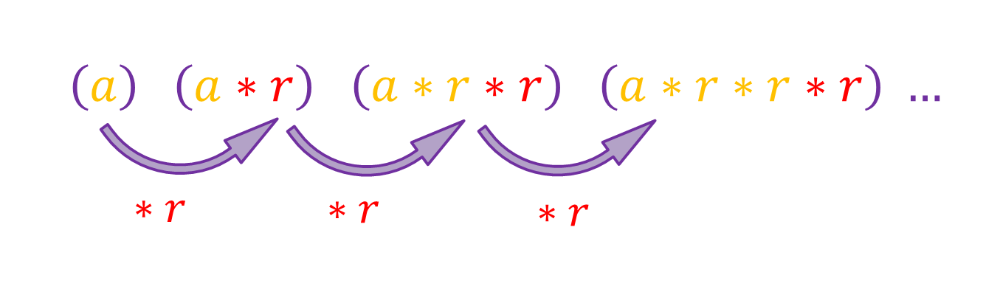
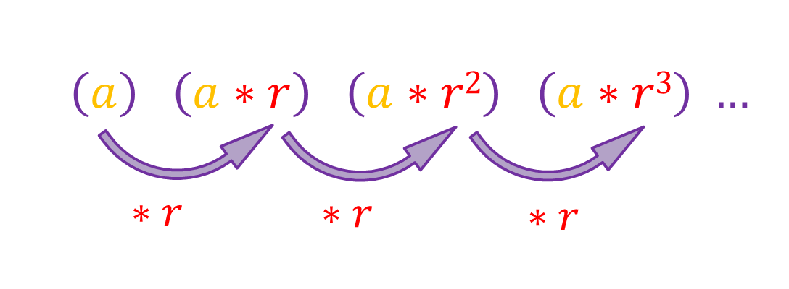
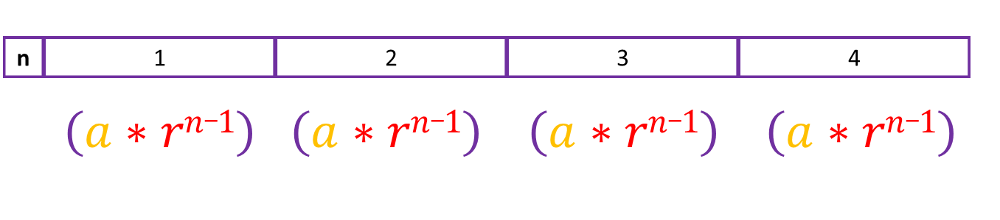

We know that the general formula for an geometric sequence is this:
The first term is represented as a while the common ratio is r. We can simplify it like this:
Lets say n tells us which term we are in, so when n is 1, r is appearing 0 times, when n is 2, r is appearing 1 time, when n is 3, r is appearing 2 times and so on. This means that in the nth term, r appears [n - 1] times, so we can write each term like this:
So [a*rn-1] is the formula to use when finding a term in a geometric sequence.